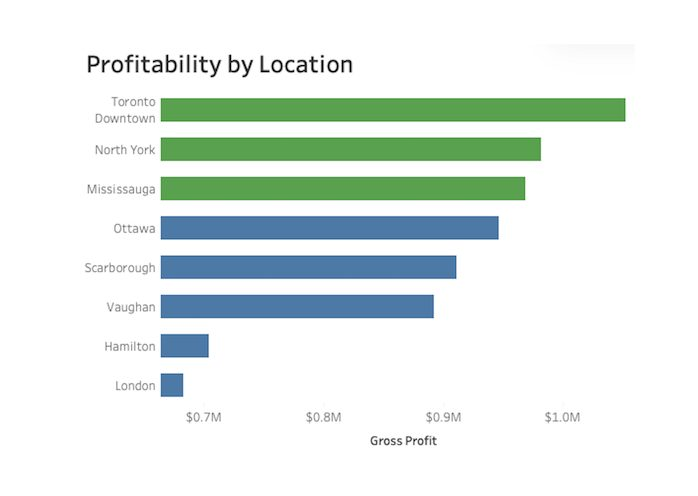

Operations Profitability & Cost Optimization
Gross margin fell from 31.45% to 24.41% while revenue held steady. Traced to a +14.85% March cost spike and two weak locations.
SQL validation framework, profitability and cost-growth analysis, and a three-page executive dashboard for a multi-location restaurant group.